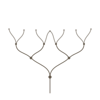

Funes the Memorious
“I suspect, however, that he was not very capable of thought. To think is to forget differences, generalize, make abstractions. In the teeming world of Funes, there were only details, almost immediate in their presence.”
This site is dedicated to one of my favorite authors, Jorge Luis Borges. Here are some of my favorite stories of his.
“I suspect, however, that he was not very capable of thought. To think is to forget differences, generalize, make abstractions. In the teeming world of Funes, there were only details, almost immediate in their presence.”
“The universe (which others call the Library) is composed of an indefinite, perhaps infinite number of hexagonal galleries. In the center of each gallery is a ventilation shaft, bounded by a low railing. From any hexagon one can see the floors above and below — one after another, endlessly.”
“I saw the teeming sea; I saw daybreak and nightfall; I saw the multitudes of America; I saw a silvery cobweb in the center of a black pyramid; I saw a splintered labyrinth (it was London); I saw, close up, unending eyes watching themselves in me as in a mirror; I saw all the mirrors on earth and none of them reflected me.”

“This web of time — the strands of which approach one another, bifurcate, intersect or ignore each other through the centuries — embraces every possibility. We do not exist in most of them. In some you exist and not I, while in others I do, and you do not.”
“The impression of great antiquity was joined by others: the impression of endlessness, the sensation of oppressiveness and horror, the sensation of complex irrationality.”